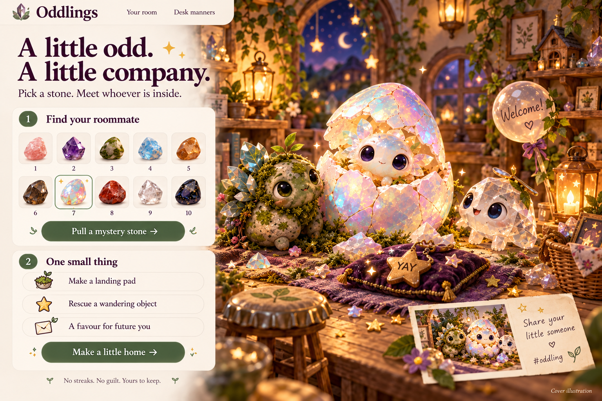

A LITTLE WEIRD. A LITTLE WONDERFUL.
Small things.
A little more alive.
You thought it was just a rock.
It has other plans.
NO SAD PETS.
JUST A LITTLE HOME.
Hand-built crystal sketches · final creature portraits are on their way.
THE DEAL
Do a little thing in your world.
We’ll make a little thing in theirs.
Today’s little gift
Just for stopping by. No chores required.
A HOME, NOT A STREAK
What is this tiny situation?
Oddlings is a chore-to-habitat game: choose a small non-food task, do it in real life, then explicitly confirm it. Completion is self-reported, not verified by the app. Furnishings are extras; your companion and visit gifts never depend on productivity. There are no hunger meters, punishment, streak resets, payments, tracking, or AI model calls. Expressive pets are fictional characters. Your room is saved locally when browser storage is available. Ten stones share one creature engine; these first portraits are CSS illustrations, not the final art.